If the lever and the transmission disagree, the control rod between them has moved: the lever reads D while the transmission sits in another detent. If the lever itself stops in the wrong places or needs the button in the wrong places, the problem is in the gate, the shift lock or the gear selector unit in the console. The checks below separate the two before you touch a nut.
Tap a step to check it off. Progress is saved in this browser only. The 1993-on steps come from Volvo's procedures GG, GH and GK, reproduced in the LEMON 1994 940 base sedan book.
Compare your lever to Volvo's drawing before calling it off by one.
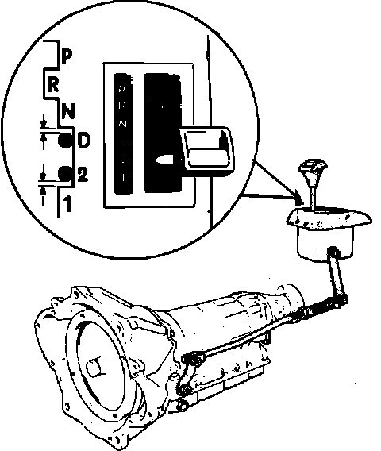
Going from D to 2 without the button, and not going from D to N without it, both match Volvo's drawing. Two things would not: D to N staying blocked with the button held in, or the lever travelling from P past N without the button. Either way, what decides the repair is whether the transmission is in the gear the lever shows. That is the next section.
Car on level ground, parking brake on, wheels chocked.
The start-inhibitor and reverse-light switch sits on the gear selector lever in the console, not on the transmission. It tells you where the lever is. It cannot tell you which detent the transmission is in.
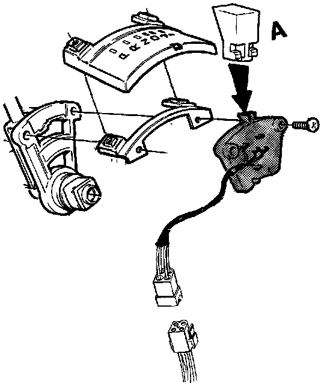
Park test, engine off. Lever in P. Under the car, try to turn the propeller shaft by hand. It must be locked. This is Volvo's own check in step GG3. If it turns, the transmission is not in P while the lever is.
Start test. The engine should start only in P and N, and the reverse lights should come on only in R. If these fail, the switch at the lever is out, not necessarily the linkage.
Drive-direction test, engine idling, foot hard on the brake. Put the lever in R, N and D one at a time and note what the car tries to do: pull backward, nothing, or pull forward. shop practice
Write down the lever position against what the transmission did. A lever that reads N while the car pulls backward, or D while nothing happens, confirms the linkage is off by one detent.
Look at the joint under the car where the control rod meets the gear lever arm. In GG1 Volvo loosens this nut so the rod is free to move in its slot. It is the only adjustable joint in the procedure, so a loose nut here lets the rod slide and shifts every position by the same amount.
Volvo procedure GG, gear selector mechanism 1993 on.
The parking brake must not be applied during this adjustment.
GG1. Jack up the car. Loosen the nut at the gear selector arm / control rod so the rod slides freely in its slot.
GG2. Move the lever to P. Press it gently forward to take up the play and wedge it there with a support.
GG3. Under the car, push the selector link on the transmission rearward into P. Confirm it is really in P: the propeller shaft must not turn.
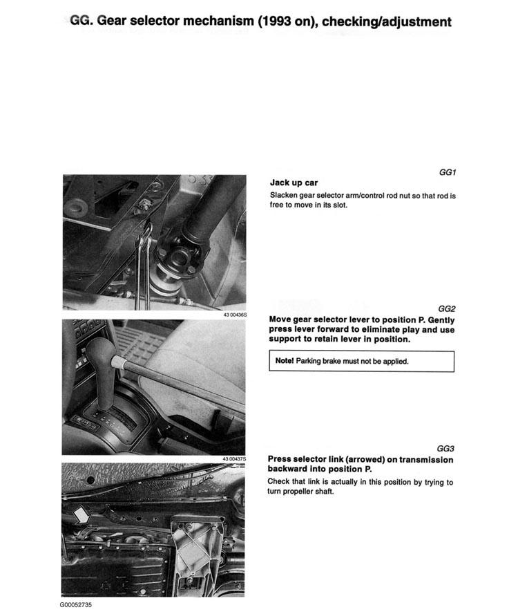
GG4. Tighten the control rod / gear lever arm nut to 25 Nm (18 ft-lb). Remove the support from the lever.
GG5. Lever to D: there must be clearance toward N. Lever to 2: there must be clearance toward 1.
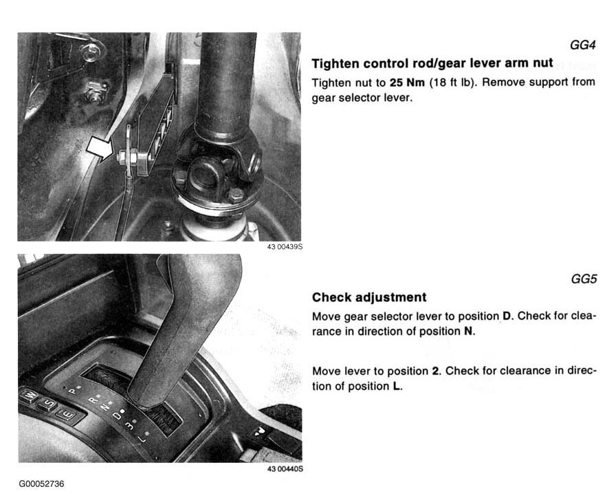
Repeat the park, start and drive-direction tests from the section above. Lever and transmission should now agree in every position.
The sedan book also prints an older procedure for a linkage with a reaction lever and lock nut: lever in P and vertical or slightly forward, turn the output shaft until it locks, push the reaction lever lightly rearward to slight resistance and tighten its lock nut to 5 Nm (42 in-lb). Free play between pin and stop in D and N must be equal to or less than in the "3" and "2" positions; then final-tighten to 17–23 Nm (12–17 ft-lb). If the lever is stiff in "3", move the reaction lever about 3 mm (1/8 in) forward and recheck.
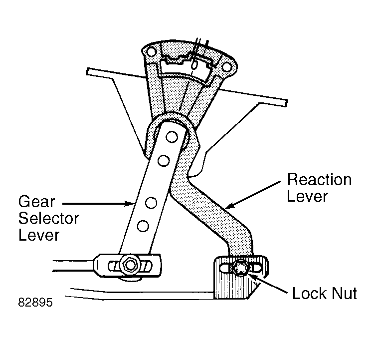
Check these if the lever won't leave P, or the key won't come out, after the linkage is right.
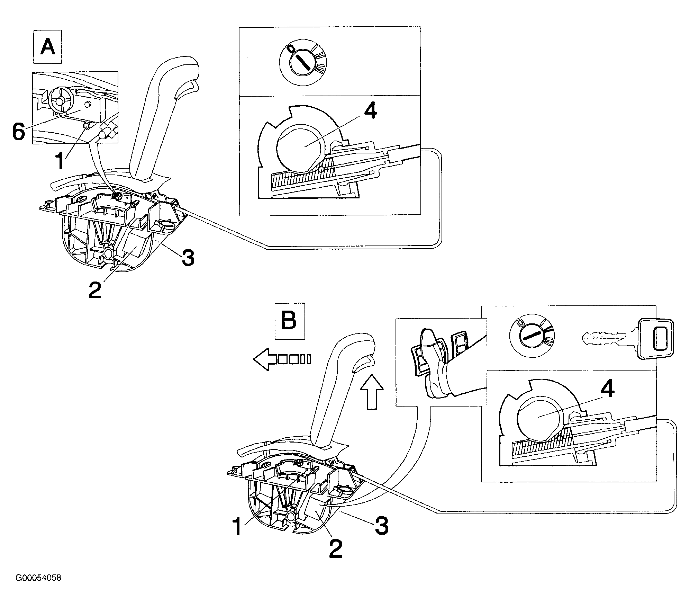
In P, ignition on, press the brake pedal: the solenoid (2) pulls its locking pin (3) in and the lever button works normally. A microswitch (6) only completes this circuit in P, so pressing the brake while driving does nothing to the lever.
GK16. Lever in P: the key must come out of the ignition easily. If not, the key lock cable is too short; adjust the cable sleeve at the gear lever end.
GK17. Lever in any other position: the key must not come out. If it does, the cable is too long; adjust the sleeve at the lever end.
GK18. Lever in P, key at I or II, press the SHIFT-LOCK OVERRIDE button (5): the lever must move out of P.
GK19. Back in P, key out, press the override: the lever must stay in P. The override only works with the key at I or II.
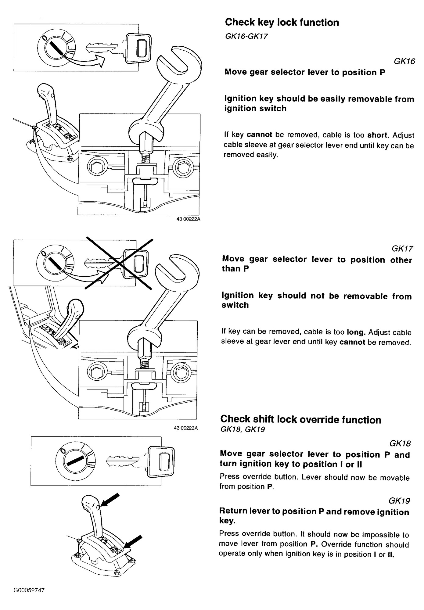
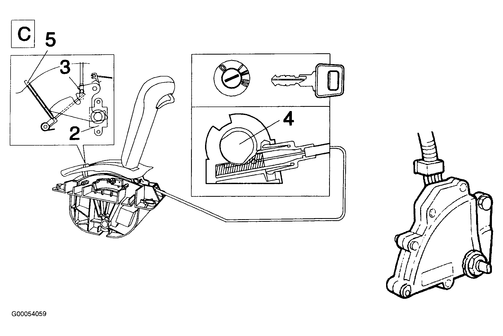
Volvo procedure GH, gear lever unit 1993 on. For a lever whose gate or detent is worn or broken inside the console.
GH1. Pull the knob straight up off the lever. The manual warns it takes considerable force.
GH3. Jack up the car. Remove the clip and disconnect the control rod from the gear lever arm.
GH4–GH6. Disconnect the battery ground lead. Remove the soundproofing panels on each side, the ashtray, the center console screws in the storage compartment and at the front, the console panel screws and the cover under the parking brake lever.
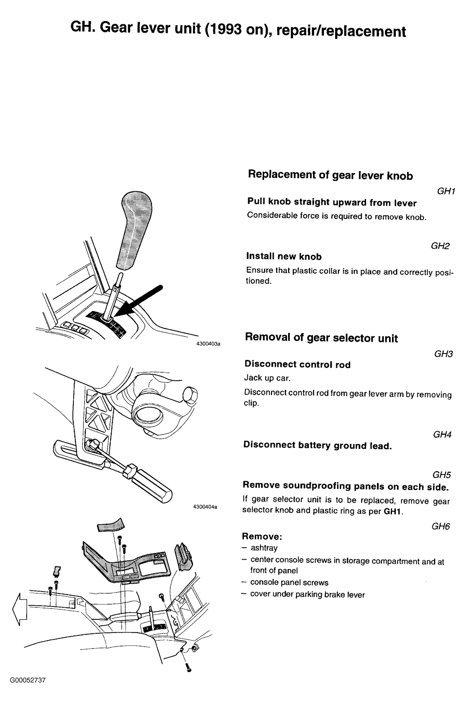
GH7–GH8. Unplug the panel connector and lift the panel off the console. On 1994 models, open the connector to the solenoid and microswitch at the right-hand side of the center panel and remove the harness clips. Pull the wiring through.
GH9–GH10, key-lock cars only. Lever in P, key at I or II. Remove the cable adjuster snap ring at the lever end, lift the rubber edge of the panel, unhook the cable from the lever arm and unclip it from the unit. Keep the cable clear of the unit.
GH11. Remove the gear selector unit screws and lift the unit and lever out.
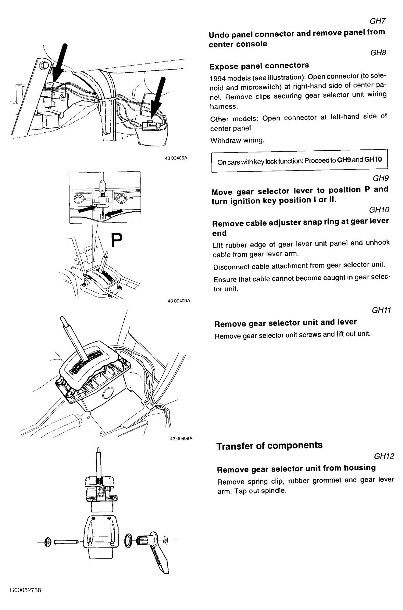
GH12. Remove the spring clip, rubber grommet and gear lever arm. Tap out the spindle to separate unit and housing.
GH13. Press in the rear edge of the indicator panel to release its catch. Cut off the locking clips on the light strip, indicator, cover and spacers.
GH14. Move the spacers behind the light strip (LHD cars), fit the indicator and strip, and install the strip clips.
GH15. Fit the indicator panel, taking care with the shift lock override button.
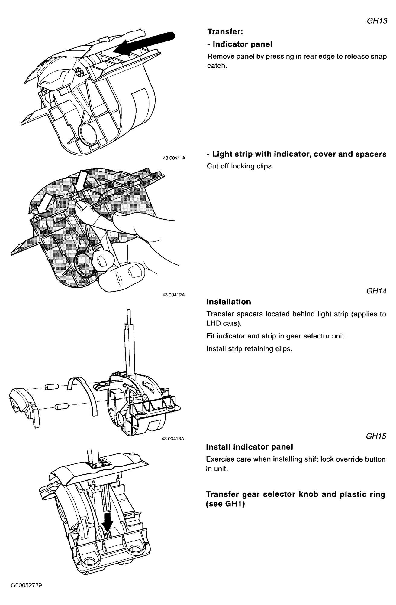
GH16. Unit into the housing with spindle, spring clip and rubber grommet.
GH17. Route the wiring under the center panel. Install the unit; screws to 8 Nm (6 ft-lb). Fit a new knob and plastic ring. The manual says not to reuse the old knob.
GH18. Reconnect the connector and clip the wiring where it was.
GH19, key-lock cars. Lever in P, hook up the cable and install its snap ring.
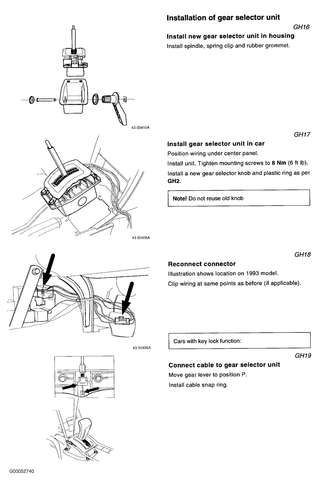
GH20. Reconnect the control rod to the gear lever arm with its washer and snap ring; the ring must sit in its groove.
GH21. Refit the console, its switch wiring, the ashtray, soundproofing panels and the battery ground lead.
GH22. Check and adjust the linkage with GG1–GG5 above. On key-lock cars, run GK16–GK19.
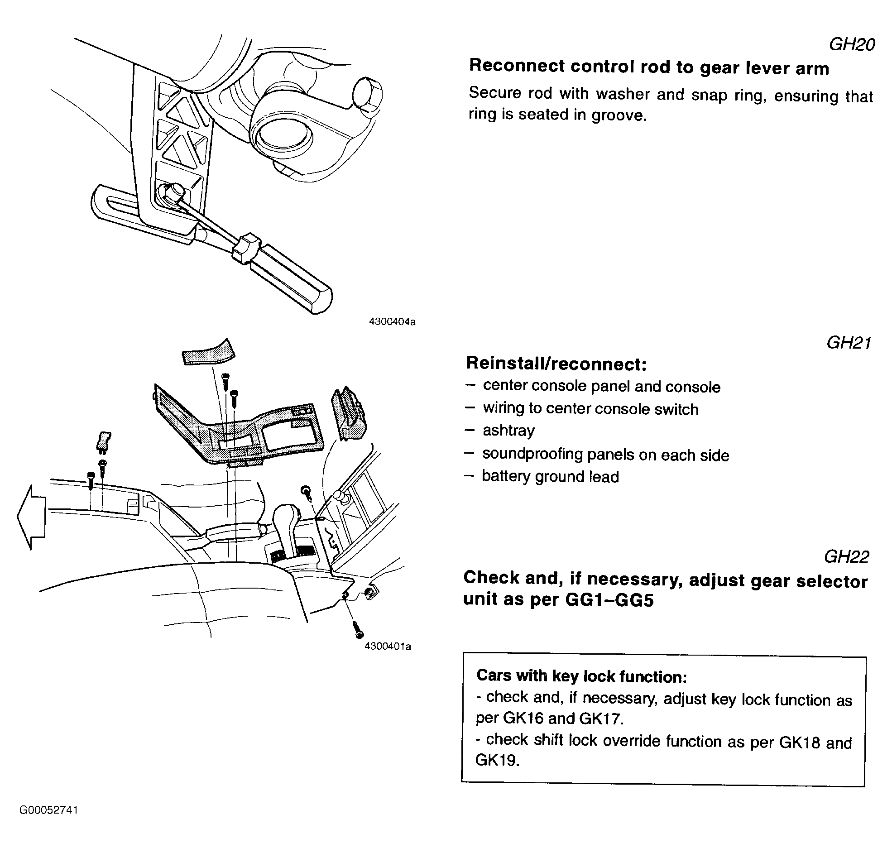
| Item | Spec |
|---|---|
| Control rod / gear lever arm nut Volvo GG4 | 25 Nm |
| Gear selector unit screws Volvo GH17 | 8 Nm |
| Reaction lever lock nut, initial reaction-lever type | 5 Nm |
| Reaction lever lock nut, final reaction-lever type | 17–23 Nm |
| Engine starts in | P, N only |
| Reverse lights on in | R only |
| Clearance check GG5: lever in D toward N, lever in 2 toward 1 | present |
Source: LEMON manual for the 1994 Volvo 940 Base 4D Sedan (AW71): Automatic Trans, Servicing - Gearshift Linkage adjustment; Shift Interlock Systems (Shift Lock, KEYLOCK & Shift Lock and Start Inhibitor descriptions; Gear Selector Mechanism 1993-95 (GG); Gear Lever Unit 1993-95 (GH); Key Lock Cable (GK16 to GK19)). Also the LEMON manual for the 1994 Volvo 940 L4-2320cc 2.3L SOHC VIN 83 B230FD: Shift Linkage Adjustments and Start Inhibitor/Reversing Light Switch replacement. Figures are the manuals' own scans; tap one to open it full size.
{kind=link}
{kind=link}
{kind=link}
{kind=link}
{kind=link}
{kind=link}
{kind=link}
{kind=link}
{kind=link}
{kind=link}
{kind=link}
{kind=link}
{kind=link}